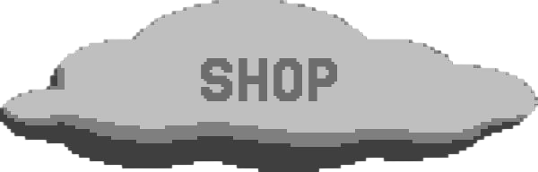

THE BAG IS THE MAP
CLICK A PART. LEARN THE CRAFT.
Tutorial Title
✖
Your browser does not support the video tag.
✖
🧶 Materials Needed
Yarn (3mm - cotton)
Crochet Hook (3.5mm)
Scissors
Stitch Marker (optional)
Clasp or Button for closure
[click the bag to begin]